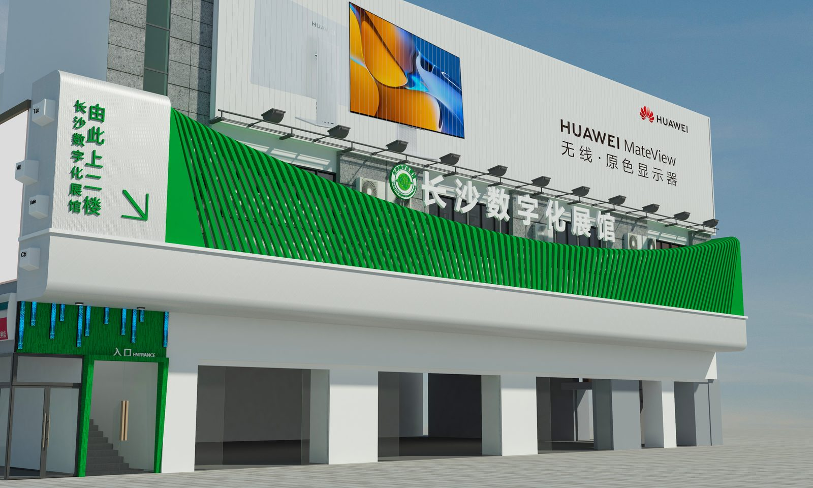
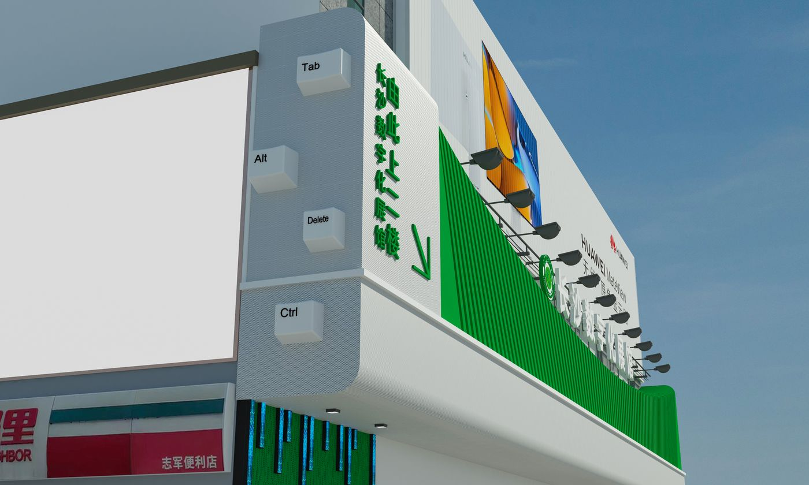
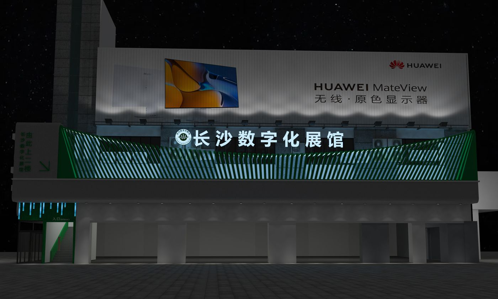

项目案例 / CASE STUDY · 12
康为数字化门头
KANGWEI DIGITAL EXHIBITION FACADE

项目角色 / PROJECT ROLE
以数字化科技体验为主题的展馆门头与外立面设计，<br>白色主体配以绿色装饰线条，将品牌信息与导视系统整合于简洁的立面语言。
A digital gallery facade — white volume, green lines, brand and wayfinding fused into one clean elevation.
项目角色 / ROLE
空间设计师
SPATIAL DESIGN
工作范围 / SCOPE
门头设计 · 外立面 · 导视系统
Facade design · Elevation · Wayfinding system
02 / 空间呈现
立面整体 / FACADE OVERVIEW
白色体量与绿色线条构成轻盈、现代的科技感立面，品牌广告位与导视标识清晰分区。

03 / 空间节点
空间节点 / SPATIAL MOMENTS
入口导视、电梯标识与广告面板的整合，让信息在立面上有序呈现。

项目总结 / PROJECT SUMMARY
立面是品牌的第一印象，简洁本身就是一种科技语言。
An elevation is a brand's first impression — simplicity is a tech language of its own.